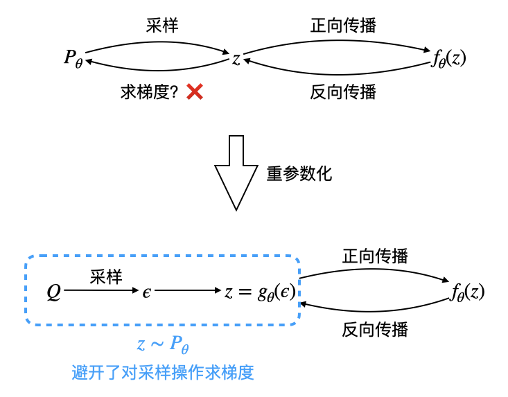
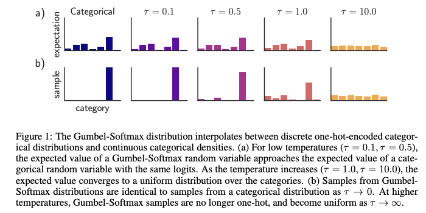

重参数化技巧 The Reparameterization Trick
重参数化技巧
很早就听说过「重参数化技巧」，但一直没有去了解，近来这个词又反复出现在我眼中，遂搜索资料学了一下，记录于此。
一般而言，我们在机器学习/深度学习的过程中遇到的优化目标长这样： \[ \mathbb E_{z\sim \mathcal P}[f_\theta(z)] \] 使用梯度下降优化之： \[ \begin{align} \nabla_\theta\mathbb E_{z\sim \mathcal P}[f_\theta(z)]&=\nabla_\theta\left[\int p(z)f_\theta(z)\mathrm dz\right]\\ &=\int p(z)\nabla_\theta f_\theta(z) \mathrm dz\\ &=\mathbb E_{z\sim \mathcal P}[\nabla_\theta f_\theta(z)] \end{align} \] 即期望和求梯度是可交换的，这使得我们可以通过「采样 \(z\sim \mathcal P\) \(\to\) 对每一个样本计算梯度 \(\nabla_\theta f_\theta(z)\) \(\to\) 求平均」的训练过程来近似上式。然而，在有些情形下（VAE、强化学习等），优化目标中的概率分布也由参数 \(\theta\) 决定： \[ \mathbb E_{z\sim \mathcal P_\theta}[f_\theta(z)] \] 如果我们尝试求它的梯度： \[ \begin{align} \nabla_\theta \mathbb E_{z\sim \mathcal P_\theta}[f_\theta(z)]&=\nabla_\theta\left[\int p_\theta(z)f_\theta(z)\mathrm dz\right]\\ &=\int f_\theta(z)\nabla_\theta p_\theta(z)\mathrm dz+\int p_\theta(z)\nabla_\theta f_\theta(z)\mathrm dz\\ &={\color{purple}{\int f_\theta(z)\nabla_\theta p_\theta(z)\mathrm dz}}+\mathbb E_{z\sim \mathcal P_\theta}[\nabla f_\theta(z)] \end{align} \] 会发现紫色那一坨没法通过采样近似——假若我们依旧从 \(\mathcal P_\theta\) 中采样，采出来的样本并不能告诉我们怎么去更新 \(\theta\)，换句话说，采样是一个不可导的操作。这时就需要用到重参数化技巧了！
既然不能直接从 \(\mathcal P_\theta\) 中采样，那就曲线救国——先从无参数分布 \(\mathcal Q\) 中采样一个 \(\epsilon\)，再通过变换 \(z=g_\theta(\epsilon)\) 得到 \(z\). 这样，梯度就能够不经过采样操作传递给 \(\theta\)：
\[ \nabla_\theta \mathbb E_{z\sim \mathcal P_\theta}[f_\theta(z)]=\nabla_\theta \mathbb E_{\epsilon\sim \mathcal Q}[f_\theta(g_\theta(\epsilon))]=\mathbb E_{\epsilon\sim \mathcal Q}[\nabla_\theta f_\theta(g_\theta(\epsilon))] \] 因此训练过程就是「采样 \(\epsilon\sim \mathcal Q\) \(\to\) 对每一个样本计算梯度 \(\nabla_\theta f_\theta(g_\theta(\epsilon))\) \(\to\) 求平均」，和一般情形并无不同。

现在的问题就是，怎样确定分布 \(\mathcal Q\) 和变换 \(z=g_\theta(\epsilon)\)，使得变换后的结果满足 \(z\sim \mathcal P_\theta\) 呢？这就得具体问题具体分析了。
高斯分布情形
在 VAE 中，\(\mathcal P_\theta\) 要求是一个高斯分布，即：\(z\sim \mathcal P_\theta=\mathcal N(\mu_\theta, \sigma^2_\theta)\)，其中 \(\mu_\theta, \sigma^2_\theta\) 由一个 encoder 网络输出而来，\(\theta\) 是这个 encoder 网络的参数。
这是一种较为简单的情形，我们很容易想到取 \(\epsilon\sim \mathcal Q=\mathcal N(0, 1)\)，并作变换 \(z=g_\theta(\epsilon)=\sigma_\theta \epsilon+\mu_\theta\) 即可。
离散分布情形
假若 \(z\) 是离散随机变量，不妨设 \(z\sim \mathcal P_\theta=[p_1,p_2,\ldots,p_k]^T\)，其中 \(\sum_{i=1}^k p_i=1\)，那么 Gumbel Max 提供了一种将采样过程重参数化的方式： \[ \mathop{\text{argmax}}_{i=1}^k\left[\log p_i-\log(-\log \epsilon_i)\right]\quad\quad \epsilon_i\sim U[0,1] \] 可以证明，依据上式采样即相当于依据概率分布 \([p_1,p_2,\ldots,p_k]\) 采样。
证明：不妨设 \(\text{argmax}\) 输出为 \(1\)，这意味着： \[ \log p_1-\log(-\log \epsilon_1)>\log p_j-\log(-\log \epsilon_j)\quad\forall j\neq 1 \] 略作化简： \[ \epsilon_j<\epsilon_1^{p_j/p_1}\quad\forall j\neq 1 \] 因为 \(\epsilon_i\) 都是 \([0,1]\) 上的均匀分布，所以在给定 \(\epsilon_1\) 的条件下，上式成立的条件概率就是： \[ \prod_{j\neq 1}\epsilon_1^{p_j/p_1}=\epsilon_1^{1/p_1-1} \] 因此采样结果为 \(1\) 的概率是： \[ \int_0^1 \epsilon_1^{1/p_1-1}\mathrm d \epsilon_1=p_1\cdot\left.\epsilon_1^{1/p_1}\right|_0^1=p_1 \] 所以说，依据 Gumbel Max 采样和依据 \([p_1,p_2,\ldots,p_k]\) 采样效果相同。
但是这里有个问题，虽然 Gumbel Max 使得采样操作避开了求导，却又引入了 \(\text{argmax}\) 这个不可导操作！因此，我们需要进一步地用可导的 \(\text{softmax}\) 对 \(\text{argmax}\) 做近似（或者更准确地说，是对 \(\text{argmax}\) 对应的那个 \(\text{onehot}\) 向量做近似），我们将下式称为 Gumbel Softmax： \[ \text{softmax}\left(\frac{\log p_i-\log (-\log \epsilon_i)}{\tau}\right)\quad\quad \epsilon_i\sim U[0,1] \] 其中 \(\tau>0\) 是温度参数，\(\tau\to 0\) 时 \(\text{softmax}\to\text{onehot}\).

说了这么多，我们现在总结一下，欲计算 \(\mathbb E_{z\sim \mathcal P_\theta}[f_\theta(z)]\)，首先采样 \(k\) 个服从 \(U[0,1]\) 的样本 \(\epsilon_i\)，然后计算 Gumbel Softmax，得到一个 \(k\) 维向量 \(\tilde z\)，那么 \(f_\theta(\tilde z)\approx \mathbb E_{z\sim P_\theta}[f_\theta(z)]\).
小结
| 高斯分布情形 | 离散分布情形 | |
|---|---|---|
| \(\mathcal P_\theta\) | \(\mathcal N(\mu_\theta, \sigma^2_\theta)\) | \([p_1,p_2,\ldots,p_k]\) |
| \(\mathcal Q\) | \(\mathcal N(0,1)\) | \(U[0,1]\) (\(k\) 个) |
| \(g_\theta(\epsilon)\) | \(z=\sigma_\theta \epsilon+\mu_\theta\) | \(z\) 通过 Gumbel Softmax 计算 |
参考资料
[1] 苏剑林. (Jun. 10, 2019). 《漫谈重参数：从正态分布到Gumbel Softmax 》[Blog post]. Retrieved from https://spaces.ac.cn/archives/6705
[2] The Reparameterization Trick. https://gregorygundersen.com/blog/2018/04/29/reparameterization/
[3] PyTorch 32.Gumbel-Softmax Trick - 科技猛兽的文章 - 知乎 https://zhuanlan.zhihu.com/p/166632315
[4] 盘点深度学习中的不可导操作(次梯度和重参数化) - Houye的文章 - 知乎 https://zhuanlan.zhihu.com/p/97465608
[5] Jang, Eric, Shixiang Gu, and Ben Poole. Categorical reparameterization with gumbel-softmax. arXiv preprint arXiv:1611.01144 (2016).
[6] 【Learning Notes】Gumbel 分布及应用浅析. https://blog.csdn.net/jackytintin/article/details/79364490]
[7] [知识点] Reparametrization tricks重参数技巧讲解及应用 - 救命稻草人来了的文章 - 知乎 https://zhuanlan.zhihu.com/p/35218887